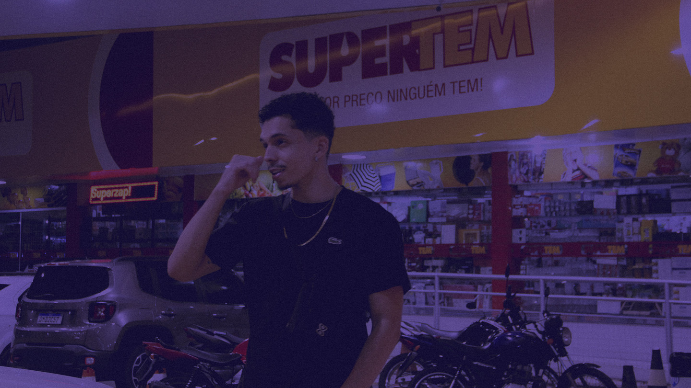

Da referência ao master
Para artistas com ideia, demo ou voz guia que precisam de produção completa e uma direção musical única.
- Beat e arranjo sob medida
- Direção vocal e sound design
- Mixagem e masterização
Lucas Belentani · produtor musical · Aracaju
Produtor musical, beatmaker e engenheiro de som com mais de 12 anos de estrada. Uma visão sinestésica transformada em 36 milhões de streams, 40+ lançamentos e uma assinatura que atravessa Trap, Boom Bap, MPB, Pop e R&B.
Quem está por trás do som
Não é uma marca sem rosto. É um produtor de Aracaju construindo universos sonoros, faixa por faixa.
Sou Duck, produtor musical, beatmaker e engenheiro de som. Transformo ideias brutas, vozes guia e referências em produções completas com identidade própria.
Meu processo combina tecnologia, escuta crítica e sensibilidade artística. Cada frequência tem um propósito; cada textura precisa contar uma história. A produção passa por arranjo, captação, sound design, mixagem e masterização como uma única direção criativa.
Com mais de 12 anos de estrada, 36 milhões de streams e mais de 40 lançamentos oficiais, trabalho entre Trap, Boom Bap, MPB, Pop e R&B sem reduzir o artista a uma fórmula. O objetivo é reconhecer a intenção da música e fazê-la chegar inteira ao público.


Primeiros anos de prática, criação e construção de linguagem própria.
O catálogo cruza o primeiro milhão de streams e amplia o alcance do trabalho.
Mais de 40 lançamentos e produção para artistas em diferentes gêneros.
Discografia selecionada
Passe o cursor ou deslize o dedo sobre cada card. O preview entra sem abrir outra página e o foco salta de um single ao seguinte.
Catálogo completo
O arquivo completo vive aqui. Os itens com preview tocam no hover e no toque; os demais mantêm o acesso direto ao lançamento.
Beat store
Pacotes do catálogo atual organizados como produto real, com preço, uso e entrega claros.
Direção musical completa
Duck trabalha como uma cadeia única: ideia, arranjo, captação, mix, master e leitura estratégica do catálogo. O objetivo é manter a assinatura sonora estável em qualquer formato.
Trabalhar com Duck
Escolhe o ponto de entrada. Duck organiza a direção, o processo e a entrega até a música chegar ao formato certo.
Para artistas com ideia, demo ou voz guia que precisam de produção completa e uma direção musical única.
Para produções prontas que precisam de equilíbrio, impacto e consistência em diferentes sistemas.
Para quem procura um beat do catálogo ou uma criação exclusiva alinhada à própria identidade.
Referência, objetivo, fase e prazo.
Escopo, caminho criativo e proposta.
Produção, revisão e acabamento.
Masters, stems e arquivos combinados.
Estúdio e sistema
Setup, mix, gravação e master como uma linha contínua. Sem moldura artificial, sem foto aleatória, sem excesso de ornamento.
Instrumento aberto · Web Audio
Uma versão concentrada das experiências das edições Legacy e Mega: constrói um ritmo, toca o sintetizador e grava uma ideia sem sair do portfólio.
Teclas A S D F G H J K · toque ou teclado físico
Captura uma voz guia no navegador. A gravação fica apenas nesta sessão e não é enviada.
Ferramentas e provas
Recursos do estúdio e referências públicas do trabalho reunidos sem páginas soltas.
Electronic press kit
Bio, fotografias, identidade, dados do portfólio e contatos reunidos para imprensa, parceiros, artistas e equipes.
Duck é Lucas Belentani, produtor musical, beatmaker e engenheiro de som de Aracaju. Com mais de 12 anos de trajetória, constrói produções completas entre Trap, Boom Bap, MPB, Pop e R&B, conectando direção artística, sound design, mixagem e masterização.
Obsidiana e hueso constroem o palco; verde assina; azul monitor e vermelho REC sinalizam tecnologia e ação.
#07110B#F0EBDD#B7FF45#39A9C9#FF594FContato oficial
Baseado em Aracaju, Duck atende projetos remotos com direção, produção e entrega profissional. Escreve com a referência, o prazo e o objetivo.